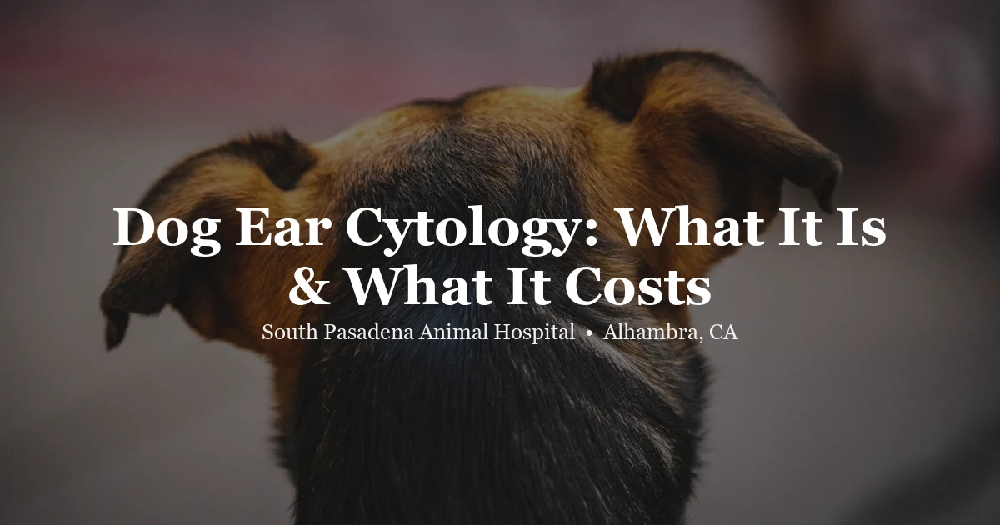

April 27, 2026 · 6 min read
Dog Ear Cytology: What It Is, When It's Done, and What It Costs

Your dog has been shaking his head and scratching at one ear for the past few days. You bring him in. We look in the ear, see some discharge, and tell you we'd like to run an ear cytology. And you think: what does that actually mean?
Ear cytology is one of the most useful in-house diagnostics we do at South Pasadena Animal Hospital. It takes about ten minutes and tells us exactly what's going on inside the ear — information that changes which treatment we reach for. Here's what you should know.
What Is Ear Cytology?
Ear cytology is a microscopic examination of material collected from your dog's ear canal. The process is straightforward:
- A cotton swab is gently rolled inside the ear canal to collect a sample of discharge or debris
- The sample is applied to a glass slide and heat-fixed or stained (we typically use a Diff-Quik-style stain)
- The slide goes under a microscope and we look at what's there
Results are same-day — usually within the same appointment. No waiting for an outside lab.
What Does Ear Cytology Show?
The microscopic picture tells us several things that matter for treatment:
Bacteria — and what kind
Not all bacterial ear infections are treated the same way. Cocci (round-shaped bacteria, like Staphylococcus or Streptococcus) typically respond to one class of antibiotics. Rods (rod-shaped bacteria, like Pseudomonas) are often more resistant and require a different approach entirely. Cytology tells us which shape we're dealing with before we prescribe anything.
Yeast
Malassezia pachydermatis is the most common yeast we see in dog ears. Under the microscope it looks like a tiny peanut or bowling pin — unmistakable once you know what to look for. Yeast infections are treated with antifungal medications, not antibiotics. If you come in with a yeast infection and we prescribe antibiotics only, we've done nothing useful — which is exactly why cytology matters before writing a prescription.
Mixed infections
Bacteria and yeast together in the same ear is very common, especially in dogs that get chronic ear problems. Treatment needs to cover both. Missing the yeast component is a common reason ear infections seem to "come back" right after a round of antibiotics.
Inflammatory cells
White blood cells in the sample tell us about the intensity of the infection and whether something more complex might be going on.
Ear mites
Less common in dogs than cats, but they do show up. Otodectes cynotis mites are visible under a low-power scope. Their presence changes the treatment plan completely — mites require a different medication than bacterial or yeast infections.
When Do We Order Ear Cytology?
Ear cytology is typically ordered when a dog shows any combination of:
- Head shaking or pawing at one or both ears
- Visible discharge — dark, waxy, yellow, or cloudy
- Odor coming from the ear
- Redness or swelling at the ear canal opening
- Pain when the ear is touched
- A recurring ear problem that keeps coming back after treatment
We also use it as a follow-up tool. If we treated an ear infection and the dog seems better but the ear still looks a little off, a repeat cytology at recheck tells us whether the infection has fully cleared or whether organisms are still present and treatment needs to continue.
One thing worth knowing: if your dog gets ear infections repeatedly, cytology each time is important. The type of organism often changes. A yeast infection one time can be a bacterial infection the next, or a mixed infection. Treating based on last time's result — without checking this time — is a common way recurring ear infections drag on for months.
Ear Cytology vs. Ear Culture: What's the Difference?
This is a question we get often, so it's worth spelling out.
Ear cytology is a quick microscopic snapshot. It tells us what's there — bacteria (and whether they're rods or cocci), yeast, inflammatory cells. Results same day. Cost: $67.00 at SPAH.
Ear culture and sensitivity (C&S) goes further. A sample is sent to an outside lab where the bacteria are grown in culture and then tested against a panel of antibiotics to find out exactly which ones will kill them. Results take 3–5 business days. Cost is higher. We recommend a culture when:
- An infection isn't clearing with appropriate treatment
- We're seeing rod bacteria, which tend toward antibiotic resistance
- The infection has recurred three or more times
- The discharge looks severe or there's concern about deeper infection
For a first-time or straightforward ear infection, cytology alone guides treatment well. For complicated or stubborn cases, cytology first — then culture if the situation warrants it.
What Happens During the Appointment?
When you bring your dog in for an ear problem, here's the typical flow:
- Exam: We look in the ear with an otoscope to assess the canal, eardrum, and type and amount of discharge present.
- Swab and slide: We take a cytology sample — takes about 30 seconds.
- Microscopy: While you wait, we stain the slide and look at it under the microscope.
- Treatment plan: Based on the cytology findings + what we saw on exam, we walk you through treatment options. We'll tell you exactly what we found.
If the ear is painful or very dirty, we may recommend cleaning before or at the same visit. In some cases, if a dog is very uncomfortable, sedation for a thorough cleaning makes more sense than struggling through it awake — we'll tell you if that applies.
How Much Does Ear Cytology Cost for Dogs?
At SPAH, ear cytology is $67.00. This is in addition to the exam fee. You can see our complete diagnostic and exam pricing here — we publish everything upfront so there are no surprises when you come in.
If your dog has recurring ear infections and you're seeing multiple vets or trying different treatments, the cytology fee is usually the most cost-effective step in the process. Knowing exactly what organism you're treating means you're not guessing — and not spending money on medications that won't work.
Breeds More Prone to Ear Problems
Some dogs get ear infections far more often than others, mostly due to anatomy:
- Floppy-eared breeds (Basset Hounds, Cocker Spaniels, Bloodhounds, Labradors) — the ear flap traps moisture and reduces airflow, creating a warm, humid environment that yeast and bacteria love
- Hairy ear canals (Poodles, Doodles, Schnauzers) — hair in the canal traps wax and debris
- Swimmers — any dog that gets in water regularly is at higher risk for moisture-related ear infections
- Dogs with allergies — atopic dogs often have inflamed ear tissue as part of their allergic response, which makes the ear canal much more susceptible to infection
If your dog fits into one of these categories, we'll often talk about a maintenance ear-cleaning routine and what signs to watch for at home. Catching an infection early — before it becomes painful and established — makes a real difference in how quickly it resolves.
Preventing Recurring Ear Infections
Cytology treats what's happening now. But if your dog gets infections frequently, there's usually an underlying reason worth investigating:
- Environmental or food allergies are the most common driver of chronic ear disease in dogs. If the allergy isn't managed, the ear infections will keep coming back no matter how well each individual infection is treated.
- Anatomy — some dogs just have ear canals that don't drain or ventilate well. Consistent cleaning helps, but it's an ongoing management situation.
- Hypothyroidism in dogs can also predispose them to skin and ear infections. Worth ruling out in older dogs with a sudden increase in ear problems.
If we're seeing you for the third or fourth ear infection in a year, we'll have a conversation about whether it's time to look at the underlying picture rather than just treating each episode.
Questions about your dog's ears? Give us a call or book an appointment at South Pasadena Animal Hospital. We're in Alhambra, just minutes from San Gabriel, South Pasadena, and the rest of the SGV.